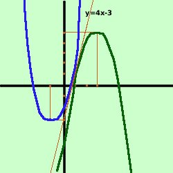

esercizio
Date le parabole
y= x2
+ 2x - 2 e y= -x2
+ 6x - 4
verificare che sono tangenti nel loro punto comune
Soluzione:
 Intanto disegniamo le due
parabole
Intanto disegniamo le due
parabole
Due parabole sono tangenti fra loro se hanno la stessa tangente nel
punto comune, quindi prima trovo il punto comune, poi calcolo la tangente in
questo punto per oguna delle due parabole e controllo che siano identiche
Faccio il sistema fra le due parabole
 y = x2 + 2x - 2
y = x2 + 2x - 2
y= -x2
+ 6x - 4
Sostituisco il valore della y dalla prima equazione nella seconda ed
ottengo
y = x2 + 2x - 2
x2 + 2x - 2 = -x2
+ 6x + 4
----------------
2x2
- 4x + 2 = 0
Divido tutti i termini per 2
----------------
x2
- 2x + 1 = 0
----------------
(x-1)2
= 0
y = (1)2 + 2(1) -2
x
= 1 (soluzione doppia)
y = 1
x
= 1 (soluzione doppia)
Quindi abbiamo il punto comune A(1;1)
Calcoliamo adesso le tangenti alle parabole nel punto A
- tangente in A alla prima parabola y=x2 + 2x - 2
fascio di rette in A:
y-1 = m(x-1)
y = mx - m +1
faccio il sistema poi metto il delta uguale a zero
y = x2 + 2x -2
y = mx - m +1
Sostituisco
y = x2 + 2x -2
x2 + 2x -2 = mx - m +1
-----------------------------
x2 + (2-m)x -3+m = 0
pongo il delta dell'equazione uguale
a zero
 = b2-4ac =
0 = b2-4ac =
0
Ho
a = 1
b = 2-m
c = -3+m
= b2-4ac =
(2-m)2 - 4 (1)(-3+m) =0
4 - 4m + m2 + 12 -4m =0
m2 -8m + 16 =0
(m-4)2 = 0
m = 4
quindi abbiamo la tangente
y -1 = 4(x-1)
y = 4x - 3
- tangente in A alla seconda parabola y= -x2 + 6x - 4
fascio di rette in A:
y-1 = m(x-1)
y = mx - m +1
faccio il sistema poi metto il delta uguale a zero
y = -x2 + 6x - 4
y = mx - m +1
Sostituisco
mx - m +1 = -x2 + 6x - 4
y = mx - m +1
x2 + (m-6)x + 5-m = 0
-------------------
pongo il delta dell'equazione uguale
a zero
= b2-4ac =
0

Ho
a = 1
b = m-6
c = 5-m
= b2-4ac =
(m-6)2 - 4 (1)(5-m) =0
m2 - 12m + 36 - 20 + 4m =0
m2 -8m + 16 =0
(m-4)2 = 0
m = 4
quindi, anche qui abbiamo la tangente
y -1 = 4(x-1)
y = 4x - 3
Essendo le tangenti identiche le due parabole sono tangenti fra loro, come
volevamo
|